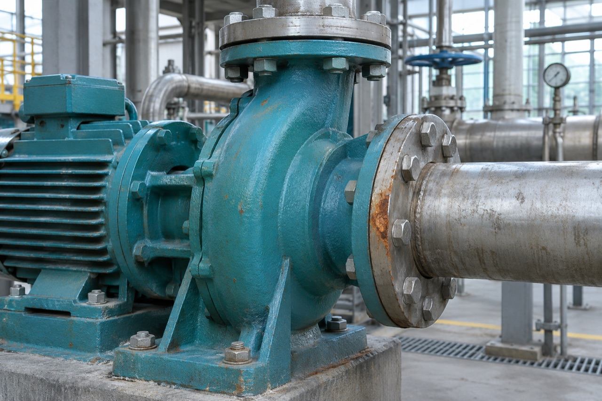

Готово к осмотру
Сверьте номер с табличкой оборудования.

Последний проверенный кадр
Остановите видеопроверку, чтобы подтвердить и сохранить последний кадр.
Серийный номер
Фактический остаточный ресурс неизвестен.
Данные датчиков не подключены. Проверяются подтверждённые признаки.
Неосмотренные признаки оставьте «Не оценено». След жидкости сам по себе не подтверждает утечку уплотнения.
Манометр нагнетания, МПа · вручную
Заметка инженера
История осмотров